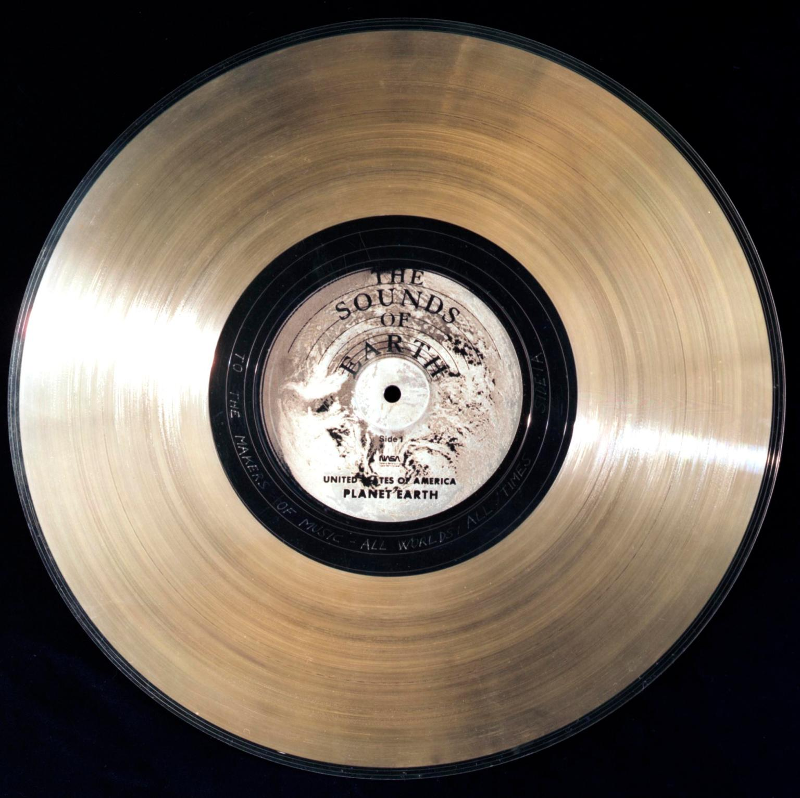
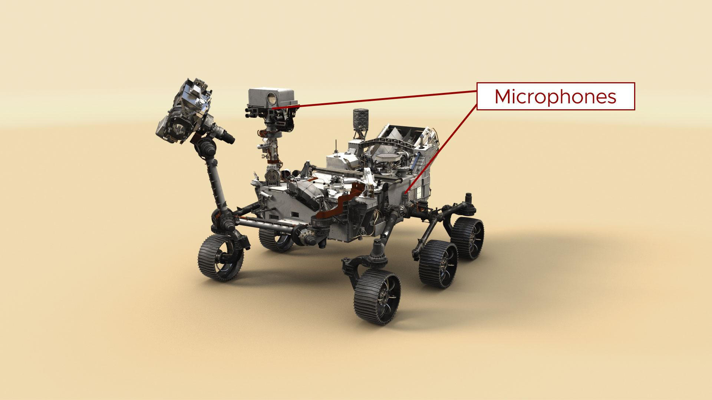
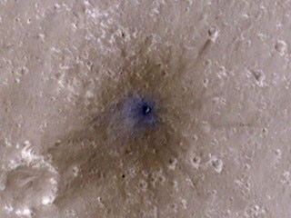

Pré-escuta
Três imagens. Três portas de entrada.
Veja antes do play. O ouvido chega mais perto quando o olhar já tem cenário.
Tema: escuta cósmica
Três registros reais da NASA e outras chaves para escutar o universo com mais atenção.
Pré-escuta
Veja antes do play. O ouvido chega mais perto quando o olhar já tem cenário.

Uma cápsula com vozes, músicas e lembranças da Terra.

O microfone tornou o planeta menos abstrato e mais presente.

Quando o dado encontra forma, a escuta ganha contexto imediato.
Arquivo sonoro
Alguns cards trazem áudio original. Outros explicam por que certos fenômenos parecem música.
Percurso de escuta
Você pode ouvir por curiosidade ou como leitura guiada.
Como sentir
Primeiro ouça uma voz humana atravessando o vazio.
Depois passe pelo vento e pelo impacto em Marte.
Encerramento
Quando um registro chega aos ouvidos, distância vira presença.
Fecho
Às vezes basta uma faixa para o espaço deixar de parecer abstrato.